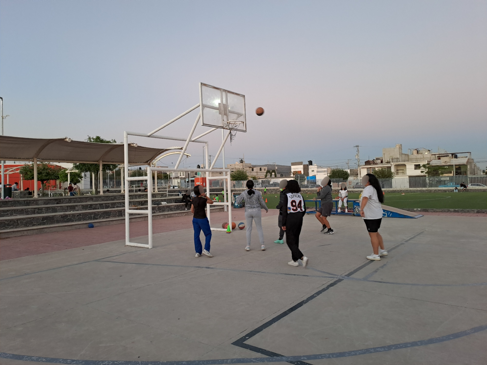
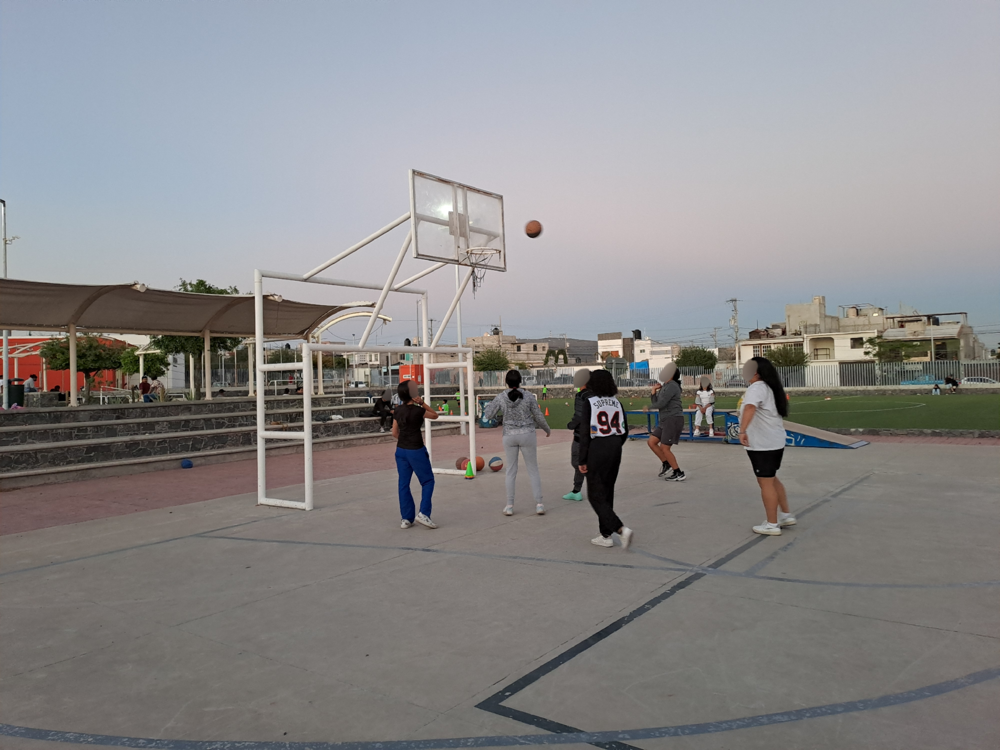

¿Qué son los CIPRES?
"Los Centros Integrales de Prevención Social son espacios que buscan promover la participación ciudadana, a través de diversos talleres, actividades y estrategias comunitarias gratuitas, que contribuyen como política pública a fortalecer y promover la prevención social de la violencia y la delincuencia."
"La misión de los CIPRES es ofrecer atención integral a personas y comunidades vulnerables, promoviendo la prevención del delito, el fortalecimiento de la seguridad, y el bienestar social a través de servicios de rehabilitación, talleres educativos y actividades de concientización. Buscamos contribuir al desarrollo de una sociedad más segura, inclusiva y empática, mediante la orientación psicológica, la prevención del consumo de sustancias y la promoción de una convivencia armónica."
"Ser un referente en la prevención del delito y la rehabilitación social en el estado de Querétaro, creando espacios seguros y accesibles para toda la comunidad. Aspiramos a fortalecer la confianza entre los ciudadanos y las instituciones, promoviendo la participación activa de la sociedad en la construcción de un entorno más seguro y saludable para las futuras generaciones."
- Empatía: Entendemos las necesidades de los demás y actuamos con respeto y solidaridad para brindar apoyo integral.
- Prevención: Fomentamos acciones orientadas a prevenir situaciones de riesgo a través de la educación y la sensibilización.
- Inclusión: Promovemos un ambiente donde todos tengan acceso a servicios de calidad, sin importar su contexto social o pers


 

Talleres Populares
- Apoyo Psicológico (CITA PREVIA)
- Fútbol 5-15 AÑOS (CATEGORÍA DEPENDE DE LA EDAD)
- Costura
- Pintura y Dibujo
- Artes Marciales Mixtas (MMA)
- Basquet 8-12 AÑOS (CATEGORÍA DEPENDE DE LA EDAD)
- INEA(Instituto Nacional para la Educación de los Adultos)
- Zumba Vespertina
- Lúdoteca 5-10 AÑOS
- Ajedez
- Baile-Kpop
- Computación Básica
- Asesorias Educativas